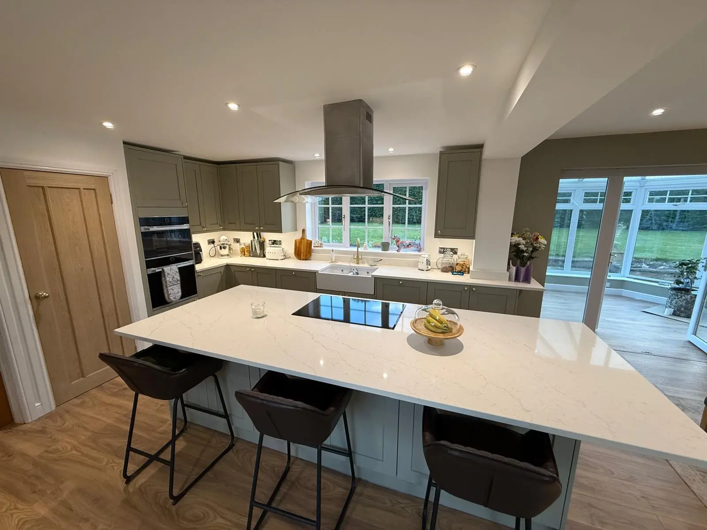
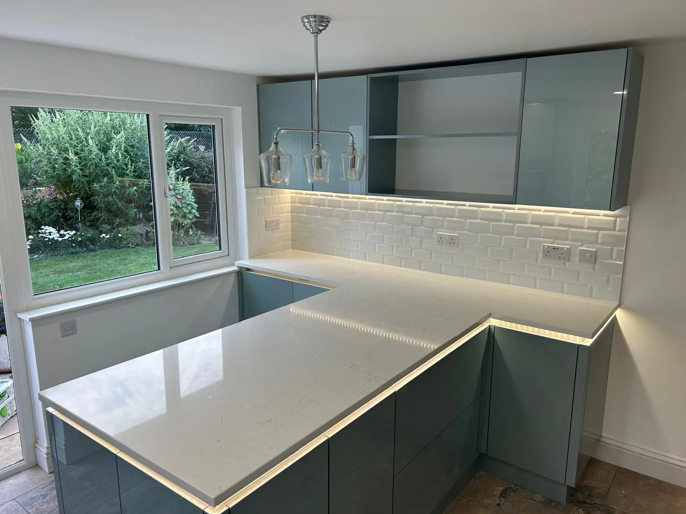
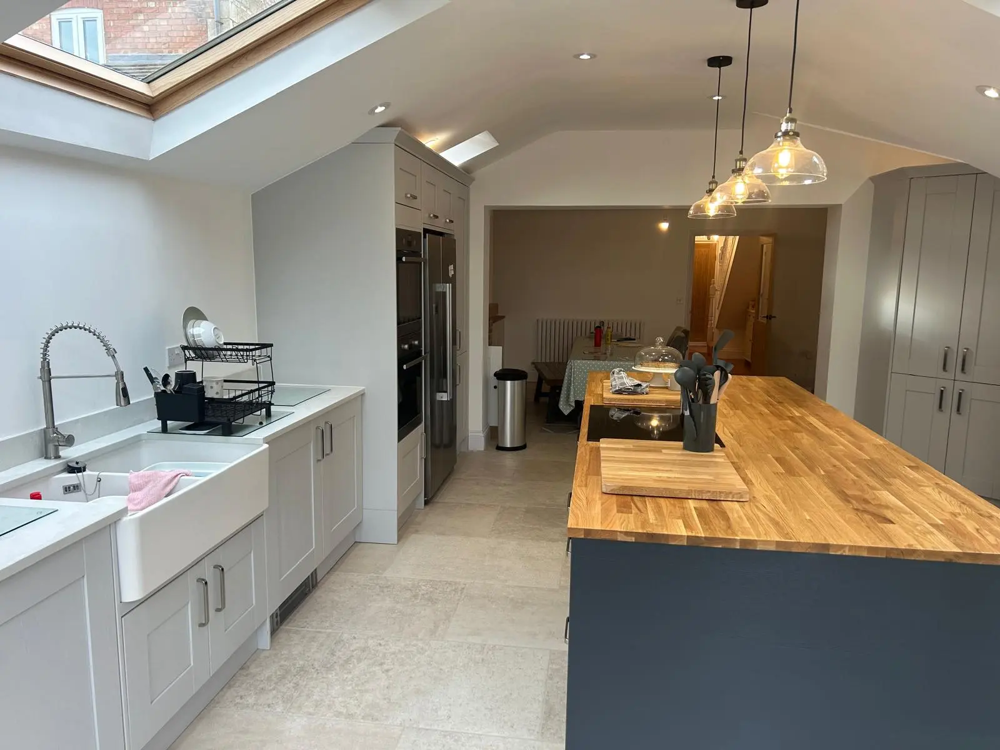
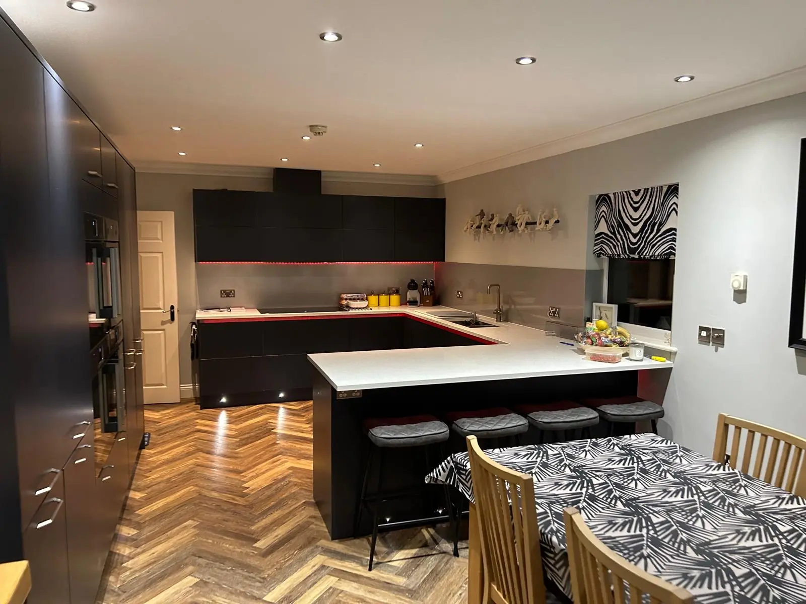
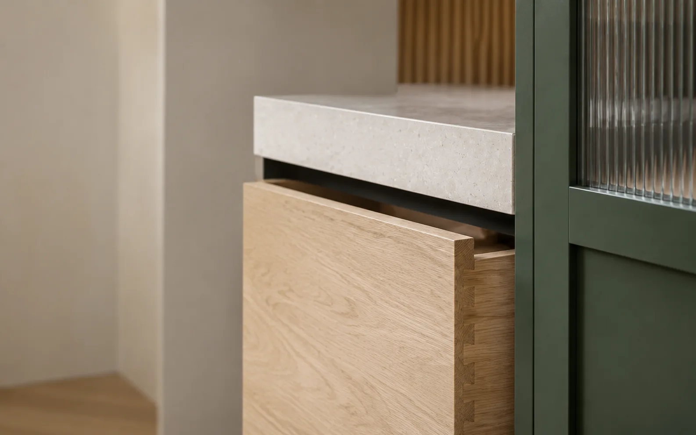
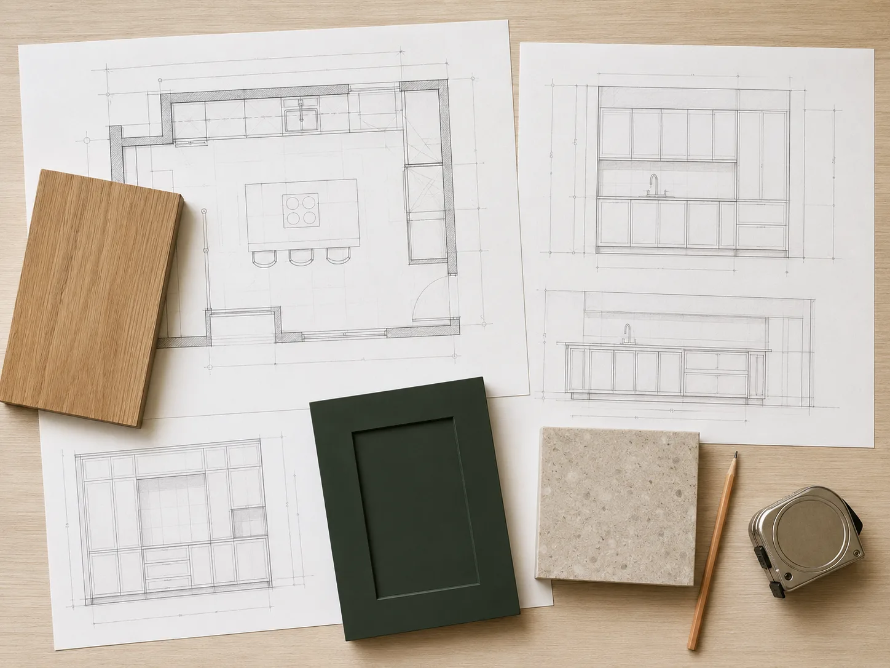

Complete project process
Design, manufacturing, delivery and installation in a single sequence.
We design, manufacture, deliver and install kitchens adapted to the specific space and people's daily needs.
Form does not send data in preview.
These are not concepts or visualisations. The photographs show kitchen projects completed by the business, with different layouts, proportions and visual approaches.




See more spaces, layouts and completed solutions in the full project gallery.
View all projects →Whether you call the idea a custom kitchen, custom kitchen cabinetry or custom kitchen, the need is the same: a space-tailored solution where design, manufacture, delivery and installation are coordinated. That is why we explain these search terms in one place instead of dividing them into competing pages.

Practical guide to matching colors, materials, proportions and lighting to the function of the kitchen.
Read guide →
Manufacturing follows the approved design: components are prepared and assembled before delivery and installation.
Read guide →Built-in kitchens that use wall-to-wall space and thoughtfully integrate storage, appliances and work areas.
Read guide →What makes up the price of custom kitchens: size, construction, fronts, hardware, work surface and installation scope.
Read guide →Kitchen design and planning, connecting space constraints, daily habits, storage and visual design.
Read guide →Kitchen planning: work areas, placement of cabinets, aisles, heights and space for everyday things.
Read guide →Images are illustrative and are not presented as photographs of completed customer projects.
After filling out the form, we will contact you within five minutes!
Work areas, storage, openings, appliance positions, light and movement should be evaluated before construction.
About kitchen planningWe collect room information, daily habits, priorities and desired result.
We coordinate working areas, modules, openings and technical conditions.
The kitchen is made according to an approved project and a checked specification.
We deliver modules, install, level and check the operation of the mechanisms.
What's cooking, how many people are using the room at once, and what needs to remain within easy reach.
Slots, niches, wall offsets and communications affect module capabilities.
Preparation, washing, cooking and storage should be linked in a convenient sequence.
The dimensions and technical requirements of the models should be known before the final design.
Splits budget and mechanisms by frequency of use and load.
Delivery route, room condition and side work must be agreed before assembly.
Choose a topic according to what you want to understand or prepare for your project.
The pages of service locations collect useful preparation information for the specific area. We always check the exact room and access conditions individually.
With room information, list of needs and priorities.
Yes. The completed projects section uses photographs of kitchens completed by the business.
Without the design, dimensions and approved specification, the amount would be misleading.
This service scope has not been approved.